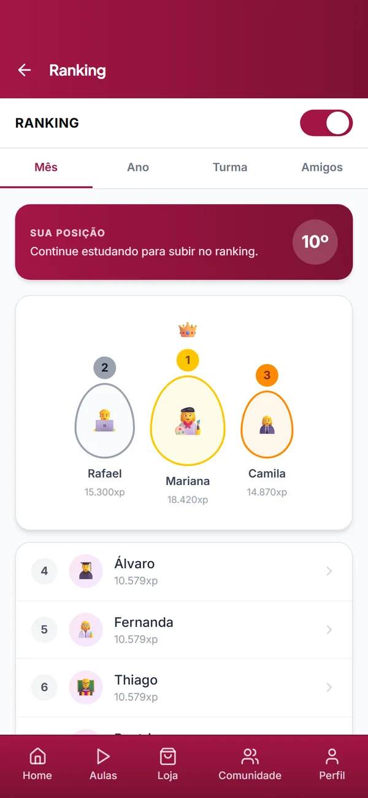
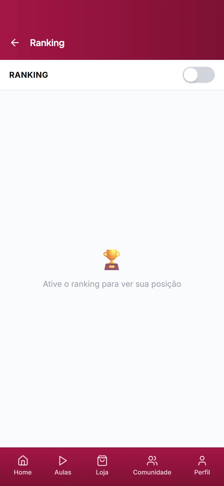

AAs built
Competição divide. O ranking virou escolha.
- Observado
-
Os registros divergem. Um quadro anota que a pessoa não gosta de se comparar com outras, “como score e ranking”; outro, que gosta do sistema de ranqueamento; e há registros de quem quer desafios com colegas.
Quadro 05 “Não gosta de comparar com outras pessoas, como score e ranking.” Quadro 09 “Desafio: gosta do sistema de rankeadmento, mostrando quem está em qual posição.” - Como interpretei
- O ranking não é bom nem ruim em si. Para quem gosta de competir, é estímulo; para quem se sente pressionado, pode virar motivo para se afastar. Tirar de todos ou impor a todos erraria com uma das duas partes.
- Decisão
- Ranking opcional. Um controle no topo da tela liga e desliga a exibição. Desligado, a tela pede “Ative o ranking para ver sua posição” e o Perfil passa a mostrar “Ranking oculto”.
- Evidência
- A decisão já aparece nos meus wireframes, nas telas “Ranking – ON” e “Ranking – OFF”. No código, a preferência começa ligada, fica salva no navegador (localStorage, chave rankingVisible) e é lida também pelo Perfil; “Resetar protótipo” a apaga.
- Estado
- Implementado no protótipo. A tela de ranking não fez parte das tarefas do teste. Pendente: o controle ainda não informa nome e estado a leitores de tela, e a escolha vale só para o navegador em uso.
Captura real Protótipo publicado · tela Ranking


O interruptor acima reproduz o comportamento do app sobre as duas capturas reais. Nomes e pontos são dados fictícios do protótipo.
Registro original Wireframe · Ranking ON e OFF